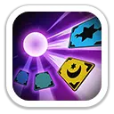
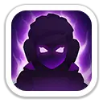
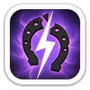
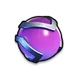
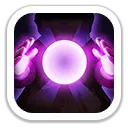

Финал судьбы
Активный навыкМиа бросает карту таро, наносит урон и получает один из двух эффектов: снижает атаку цели на 20% на 2 секунды либо оглушает её на 1,5 секунды.
270 / 297 / 324 / 351 / 378% атаки

Случайный урон · лечение · усиление атакующего сбора
Миа — герой 3 поколения с очень необычным набором навыков. Её сила строится на случайных результатах: часть умений может сработать невероятно мощно, а часть — заметно слабее. Благодаря Колесу удачи она остаётся одним из самых доступных и полезных героев 3 поколения для игроков без крупных вложений.
Максимальные базовые характеристики героя.
Используются в Арене, Освоении и других боях героев.

Миа бросает карту таро, наносит урон и получает один из двух эффектов: снижает атаку цели на 20% на 2 секунды либо оглушает её на 1,5 секунды.
270 / 297 / 324 / 351 / 378% атаки

Создаёт базовое значение урона, после чего итоговый результат случайно выбирается в очень широком диапазоне от 5% до 600% этого значения.
База: 50 / 55 / 60 / 65 / 70% атаки
Лечит союзного героя с наименьшим запасом здоровья. Итоговое лечение случайно колеблется от 5% до 400% рассчитанного базового значения.
База: 100 / 110 / 120 / 130 / 140% атаки
Работают в маршах, сборах и PvP между войсками.

Каждая атака всех войск имеет 50% шанс проклясть врага и увеличить получаемый им урон.
+10 / +20 / +30 / +40 / +50% получаемого урона
Атака всех войск имеет 50% шанс нанести повышенный урон. Бонус распространяется на весь марш, а не только на копейщиков.
+10 / +20 / +30 / +40 / +50% урона
Даёт всем войскам 40% шанс уменьшить получаемый урон.
−10 / −20 / −30 / −40 / −50% получаемого урона

Эксклюзивное снаряжение Мии усиливает её собственные характеристики и делает случайные навыки заметно надёжнее.

Что даёт больше пользы в первую очередь.
Очень полезна лидером собственного сбора: её экспедиционные навыки усиливают урон всех типов войск, а Кристалл судьбы добавляет атаку сбора.
Сильна в атаке, но зависит от шанса. В длинных боях вероятность выравнивается, а в одном решающем столкновении результат может качнуться в любую сторону.
Хороша благодаря контролю, случайному взрывному урону и лечению союзника с низким здоровьем.
Комбинирует урон, контроль и лечение, поэтому может закрывать сразу несколько ролей в команде.
Да. Для 3 поколения Миа — один из самых выгодных героев, особенно если ты развиваешься через Колесо удачи. Она полезна на Медведе, в атакующих сборах и Арене. Главное — помнить, что её сила похожа на хорошо заточенную рулетку: в среднем очень мощно, но каждый отдельный бой может выглядеть по-разному.